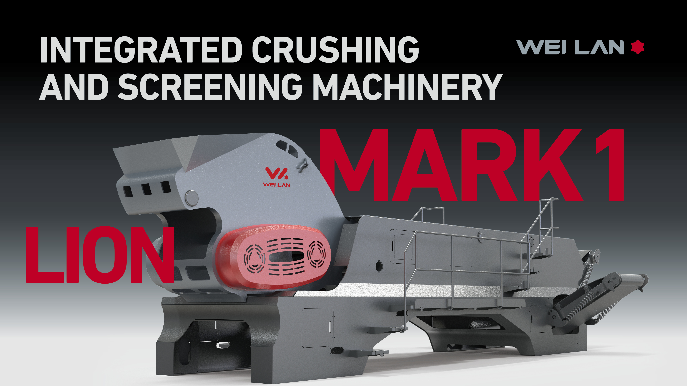

Lion One station
Integrated crushing and screening station with 200 mm feed size, 35 m2 footprint, and full hydraulic drive.
Construction and Bulky Waste Recycling
The WEI LAN Lion One system combines crushing, screening, magnetic separation, air separation, baling, weighing, and digital control for construction waste, decoration waste, demolition waste, and bulky waste projects.

Line Modules
Configured for aggregate recovery, light material separation, metal removal, automated control, and operational reporting.
Integrated crushing and screening station with 200 mm feed size, 35 m2 footprint, and full hydraulic drive.
Capacity options fit different municipal, industrial, and construction waste resource utilization projects.
Supports shredder, trommel screen, vibrating screen, magnetic separator, positive-negative pressure air separator, and baler.
Manual, automatic, and remote control modes support start-stop control, alerts, weighing flow, and reporting.